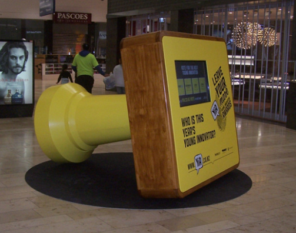

Giant Stamp
The Young Innovator of the Year awards are an annual event for students of different age groups to come up with creative ideas which may solve every day problems. The winners are decided by a judging panel and a public vote.
To draw attention to the awards and encourage prople to participate and vote the sponsers and YIA design team came up with the concept of a giant stamp, echoing the winners trophy's which would incorporate an interactive touch screen to view the finialists.
The brief for the stamp construction was it had to have a lifespan of several years, able to be taken apart and reassembled as it moved to various venues, \ easy and secure access for fitting and removing the electronics and inpire something of a "wow factor".